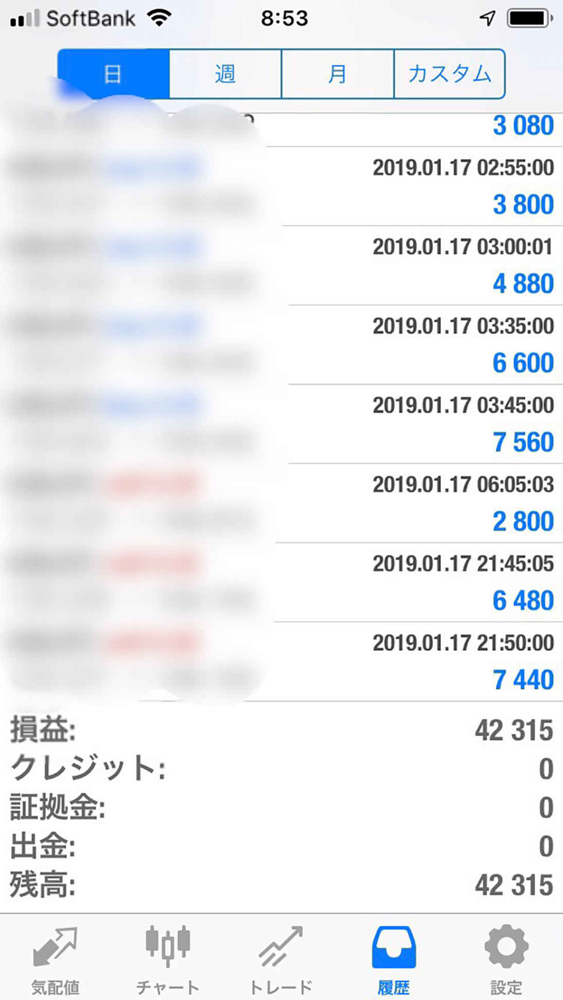
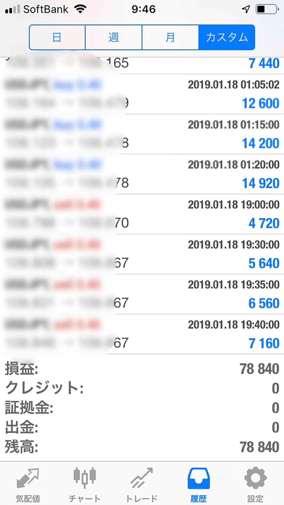

| なぜ、FX自動売買が最強の投資法なのか？ 〜はじめの一歩の選び方〜 | |
| kentaro | |
| Hitotsuku Publication (2019) | |
この本を開いたあなたは、こんな悩みを持っていませんか？
「何年も会社に尽くして働いても、給料がなかなか上がらない」
「今後の景気を考えたら、貯金だけでは将来生活できるのか心配だ」
会社員は給料もほぼ決まった金額で毎月もらうことができて、生活設計はしやすいと思えます。しかしながら、厚生労働省の毎月勤労統計調査や賃金構造基本統計調査などを参考にすれば、日本人の年収は下がり続けています
。
収入が下がるだけではなく、２０１９年10
月からは消費税が10
％
に引き上げられ、家計の圧迫に拍車がかかります。消費税だけではなく食料品の値上げも続々と行われ、家庭で使えるお金はどんどん目減りする傾向にある
と言えます。
少子高齢化により、社会保障の制度も将来的にどうなるのかも不透明な世の中になり、多くの不安を抱えている方も多いかと思います。
将来への不安から、将来のために少しでも収入を増やそうと、副業を考えている方もいるでしょう。幸い、世の中の流れで副業を認める企業が増え、自治体も関係機関であれば副業を認めるような動きも増えてきています。
ただ、副業は結局のところ自らの時間を労働に充てるわけですから、時間が確保できなければ収入の増加にはつながりません。
そこで注目してほしいのが「投資」
です。私は学生時代に起業し様々な失敗を経験しましたが、現在は会社経営７年目になります。
投資での失敗もあり７桁ものお金を失う経験もしています。しかし、その失敗を生かしながら現在は出版やラジオ番組制作、ホームページ制作などＩＴ事業を行う傍ら、ＦＸ、バイナリーオプション投資を行い成果を出しています。
投資においていろんな経験をしてきた中で、私は投資経験がない初心者でも、将来の資金や資産を増やすために投資を行うのは重要だと考えています。昔と違って自動売買ツールを活用すれば、誰でも利益が出せるようになっています。
初心者でも、これまで投資に失敗した方でも、この本を読んで頂ければ投資のイロハを勉強することができて、投資の一歩を踏み出せるはずです。
一通り読んで頂ければかなりの知識が身につくはずです。ぜひ、最後までお読みください。
この章では私が考える投資の重要性を、様々な観点からお話ししたいと思います。特に、投資未経験者には読んで頂きたい内容になっています。収入と支出、さらには老後の話まで取り上げています。
物価上昇、税金や保険料の引き上げ、年金受給年齢の引き上げ、年金受給額の引き下げ、老後に必要なお金の話について私なりの考えを述べています。
冒頭にも少し触れていますが、消費税などの税金や保険料は年々増加しています。保険料の例をあげると、昭和36
年４月から昭和41
年12
月までの毎月の国民年金保険料は、35
歳未満なら１００円でした。35
歳以上でも１５０円と、今では考えられない保険料の低さです。
その後、年々増加していき平成30
年４月から平成31
年３月の毎月の国民年金保険料は１万６，３４０円です。さらに保険料や税金だけではなく物価も上昇しています
。
いろんな商品やサービスを購入するにも価格は上昇傾向で、食品メーカーなどは人件費や原材料の高騰などにより、値上げを余儀なくされています。
一方で、平均収入は毎年のように下がっています。物価の高騰に対して給料が下がるとなれば、将来のために蓄えたお金も目減りしてきます。
今まで通りの支出を続ければ生活はどんどん苦しくなっていくのは、容易に想像がつくでしょう。
昨今、国会でも議論されているのが、年金受給年齢の引き上げです。現在、年金を受給できるのは65
歳からとなっています。年金加入の仕方により60
歳からでも受給できるケースもありますが、基本的に65
歳となっています。
最近、議論されていたのは、受給年齢を68
歳にするかどうかです。２０１８年10
月３日の厚生労働大臣の発表によれば、受給年齢の一律引き上げを直ちに考えることはないと名言はしています。
ただし、少子高齢化の流れを考えても、年金受給の年齢を引き上げてもおかしくはありません。もし受給年齢が68
歳となれば、会社を退職しても３年、長い人なら８年程度は自分で生活費を賄わなくてはいけません。
さらに受給額の引き下げも考えられますから、老後の不安は募るばかりです。実際平成29
年の年金支給額は０．１％
引き下げられています。
当時の減額理由は物価の下落からというものでしたが、財源の問題を考えれば物価が上昇している中での受給額引き下げも考えられます
。
現役で会社員をしていても、給料と物価の兼ね合いから貯蓄が目減りする恐れがある上に、老後の大切な収入源である年金ですらどうなるかわからない状況であるのは、多くの方が懸念しているはずです。
平成28
年の厚生労働省の資料を参考にしていくと、男性の平均寿命は84
歳、女性の平均寿命は89
歳となります。会社を退職するのが65
歳だとしても、20
年間から25
年間くらいの生活費を何とかしないといけません。
総務省が毎年公表している「家計調査報告」には、高齢夫婦無職世帯の家計収入が記載されています。高齢夫婦無職世帯とは、端的に言うと「年金暮らし」の世帯となります。
２０１６年の資料によれば、高齢夫婦無職世帯の世帯支出は26
万７，５４６円が平均となっています。つまり、約27
万円の生活費が毎月必要となるわけです。
資料をもとに単純な計算ですが、毎月27
万円ということは１年間で３２４万円。会社を退職してから25
年間の生活を送るとなれば、８，１００万円と算出できます。
退職後の収入は年金になるわけですが、ここでもモデルケースを考えてみましょう。夫は40
年間会社勤めをして妻は専業主婦だと、月々の年金受給額は22
万円ほどです（世帯の年金収入）。
夫も妻も平均寿命で亡くなったとすれば、夫が存命中の年金受給額は５，０１６万円です。夫が亡くなった後の５年間は、妻が遺族厚生年金として毎月16
万５，０００円受給します。
計算していくと、５年間で妻がもらう年金は９９０万円となり、夫が存命中に支給された金額を合わせれば、約６，０００万円の年金収入になることがわかります。
生活費の差額を考えると、老後に必要なお金が２，１００万円と試算できます。ただ、すでに申し上げたように、年金受給の年齢引上げや受給額引下げで、老後に必要なお金はさらに増えることも考えられます
。
ちなみに、厚生労働省のサイトや日本年金機構のサイトで、自分の年金受給額が試算できます。あくまでも現状での試算になりますが、一度、試算してみるのもいいでしょう。そこから老後に必要なお金が見えてきます。
収入を得るにはに、労働により対価として給料をもらう、ビジネスを始めて売上をあげる、それから「投資」があります。不安定な世の中ですから、どれか一本に絞って収入を得ていくのは非常にリスクが高いと私は考えます。
「営業職で頑張って働いてインセンティブを得よう」と考えても、給与体系の見直しや最悪、会社が倒産でもすれば収入源を失います。
起業も同じで、「会社員時代よりも自分の力次第で稼げる」と意気込んで独立したとしても、用意周到にやらなければ無収入どころか借金を抱えてしまうでしょう。
私は投資をあなたにおすすめしていますが、特に初心者や過去に投資で失敗をされた方が投資一本で生活するのも、リスクが高いと考えています。高度な知識やまとまった元手が必要になるケースが多いからです。
私がお伝えしたいのは、投資をすすめているからと言って「投資で生活しましょう」ということではありません。投資を始めて「現状の収入源にプラスしていきましょう」
ということです。
副業的に始めても、投資で利益を上げるのは難しいことではありません。難しくないと言えば誤解を招くかもしれませんが、投資する商品選びと投資方法を上手く選択すると、初心者でも十分な利益が出せます
。
収入源を増やすためにも投資にチャレンジしようと思っても、「リスクがあって怖い」と考える方もいるでしょう。もちろん、投資にはリスクはつきものです。
しかし、投資と一口に言っても、金融商品や投資手法は幾多もあります。「リスクは全くありません」と言い切れませんが、「低リスク」での投資は十分に可能です。私の考えにはなりますが、「投資は大きな資金を用意しないと無理」というのは誤った考えです。
当然、大きな金額で投資をすれば利益も大きくなりやすく、成功し続ければ投資だけで生活することも夢ではありません。ただ、投資経験の浅い方が借金までして、資金をこしらえて投資するのはおすすめできません。
初心者や過去に投資で失敗をされている方は、できるだけ低リスクな投資手法を選んで経験を積む。その後、知識や投資感覚が身についたところで大きなリターンを得る手法に変えればいいのです。
はじめからハイリスクでハイリターンを狙う必要は全くありません。ローリターンの投資でローリスクとは言っても、「知識」が必要だと思うかもしれませんが、その心配もありません。
必要最低限の知識は必要であっても、すべてのことを勉強していたのではいつまでたっても前に進めません。まず行動してみることが、何事においても成功する秘訣
でもあります。
この章では５つの金融商品を取り上げ、それぞれのメリットデメリットをわかりやすく解説していきます。
投資しろと言われても、どのような商品があるのかを理解しなければ勝負できません。「投資をする」と決意したら世の中にはどんなものに投資できるのか、その特徴はどうなっているのか。
いろんなことをリサーチすることは、スポーツやビジネスと同じで、投資も基本的な知識を身につける必要があります。初心者でリスクを減らした投資がしたいと考えたら、その考えにマッチする金融商品を選ばないといけません。
金融商品はメジャーなものからマイナーなもの、最近登場してきたものなど様々です。その中で自分の投資スタイルや方向性に合うものを選んでいきましょう。
株式投資は最もメジャーな金融商品と言えます。投資未経験者でも、投資と聞けば「株」を連想することでしょう。
利益を得る流れは、意中の企業の株式を証券会社から購入し、価格の上がり下がりで利益をとっていきます。
＜
株式投資のメリット＞
株式投資の大きなメリットは、投資を始めるにあたってのハードルが低いことです。「私、株式投資はじめたの」と知り合いに告げて、不思議がられることはまずないでしょう。また、「株式投資をする」と身内に伝えても、反対されることもないと思います。
それだけ知名度があり、安心感のある金融商品なのです。メリットはそれだけではありません。株式を購入する際にどの企業がいいかをリサーチすることで、見識が広がります。
「この企業はこんな事業をやっているのか。新製品に期待できそうだから株を買ってみよう」といった具合に投資先を選ぶ人も多くいます。
株価はその企業の好調不調だけではなく、社会情勢も大きく影響します。政府が打ち出した施策にも影響されますし、アメリカ経済の影響も受けやすいです。広い視野に立って物事を考え、知識を習得していくので、社会人としての基礎力も底上げできます。
＜
株式投資のデメリット＞
株式投資は経済面の知識が身につき、仕事にも生かせて上手く行えば利益も手に入る、魅力的な金融商品です。
しかし、大きなデメリットがあります。それは大きな元手がないと十分な利益が得られない
ことです。
株式を購入する際は、たいてい１００株からになります。株価が１万円の企業であれば１００万円の資金が必要となるのです。株価が数百円や数千円の企業もたくさんありますが、大幅な値上がりを期待するのは難しいところです。
さらに、株式投資の場合、多くの利回りが期待できないのも現実です。株式に関連する書籍などを見るとわかりますが、５％
の利回りがあればいいほうです。
利回りは、１年間投資した金額に対してもらえる利益になりますから、仮に１００万円分の株式を購入しても、年間で５万円の利益にしかなりません。
そこから税金も引かれるわけですから、満足な利益を上げていくには大きな元手が必要となるわけです。
もっと言うと、今後成長しそうな企業に投資しなければ利益を出していくのは困難です。どの企業が将来有望かの見極めは、初心者には難しいところです。取引においても、証券会社が営業している平日の取引です。会社勤めしている方々にはデメリットになります。
不動産投資も、株式投資と同様で多くの方がご存知かと思います。利益の出し方は、不動産を保有し家賃収入など定期的な収入を得ることになります。
あなたが賃貸のマンションやアパートに暮らしているなら、その物件のオーナーさんが不動産投資をしていることになります。
最近では、土地を借りてコインランドリーを経営したり、駐車場を運営したりするケースも出てきています。
＜
不動産投資のメリット＞
不動産投資のメリットは、土地やマンションなどを所有して投資するので、社会的なステータスが向上します。「不動産をいくつか持っている」と聞けば、誰もが「すごい」と思います。
会社員ならば銀行からの信用も高く、融資を受けて不動産を購入するにしても融資が通りやすいと考えられます。立地のよい物件や新築なら、すぐに入居者が現れて満室になることさえあります。
物件の管理も業者が行いますから、不動産を持ってしまえばほったらかしで定期収入が得られることになります。定期収入であることを考えれば、手堅い投資の一つになります。
＜
不動産投資のデメリット＞
会社員なら融資は通りやすいものの、絶対通るとはいいがたいです。融資を受けるにもある程度の頭金が必要で、不動産購入となれば数百万円は用意しないといけません。
頭金なしで購入金額をすべて借入するフルローンもありますが、物件の修繕など管理費用が出てくると捻出できないこともあります。新築なら管理費用も発生しないだろうと考えるのは甘いです。
日本は地震や洪水、大雪など災害大国です。災害が起これば新築でも修繕が必要になるかもしれません。そのようなリスクもしっかりと考えておかないといけないのです。
それから、根本的によくない立地や中古物件なら、物件の状態が悪ければ入居者も集まりません。多額の借金をして不動産を持っても、利回りが悪くローンすらも払えなくなり自己破産してしまうことさえあります。
よって、不動産投資は投資初心者が少ない金額で始めるには、非常にハードルが高くなります
。
仮想通貨は、２０１７年に爆発的な人気を誇った金融商品です。「億り人」と呼ばれる言葉も誕生し、仮想通貨の投資で１億円以上の利益を出した投資家も存在します。
仮想通貨は「通貨」というくらいですから、「お金」の一種になります。日本円などの法定通貨と違うのは、紙幣や硬貨で存在しないインターネット上のお金であることです。
仮想通貨は代表的存在のビットコインをはじめ、１５００種類以上はあると言われています。今この瞬間にも新たな仮想通貨が誕生しているかもしれません。
株式と同じで意中の銘柄を購入し、価格の上がり下がりで利益を出します。
＜
仮想通貨投資のメリット＞
仮想通貨の大きなメリットは、少ない金額でも大きな利益が出せるところです。様々な銘柄はありますが、リリースされてから数か月や１年程度で、数百倍もの価格に跳ね上がるものもあります。
簡単なイメージとして、１万円分購入したのが数百万円になるということですから、非常に魅力的です。１通貨当たりの価格が１円にも満たない銘柄もありますし、将来跳ね上がれば、わずかな金額で大金を獲得できることになります。
取引方法も、レバレッジをかけて元手の何倍もの金額で取引できたり、積み立ててじわじわと利益を出す方法なども登場しています。
＜
仮想通貨投資のデメリット＞
仮想通貨は少額でスタートできる魅力がある一方で、利益を出すには物足りない相場になってきました。２０１７年12
月は数多くの銘柄が価格暴騰で、勢いがどこまで続くのかといったところでした。
しかし、２０１８年早々に各銘柄が暴落し、そこから巻き返せずにいます。ビットコインは一時、２００万円を超しましたが、２０１９年１月上旬時点で43
万円程度。正直、復活の兆しが見えません。
加えて、記憶に新しいのが、国内の仮想通貨取引所による仮想通貨の多額流出事件も不安材料です。仮想通貨自体に問題はなくても、取り扱っている取引所の管理体制が甘いと、投じた資産や保有している資産を失ってしまいます。
法整備も追いついていなく、簡単に言うと何かあっても個人の責任となっているのは否めません。取引所独自に補償制度を設けて顧客保護に努めているところもありますが、多額の資産を預けていると十分ではありません。
仮想通貨はインターネットを介したお金であることから、仕組みを理解しようとしても難しい部分があり、銘柄を選ぶにも苦労します。詐欺まがいのコインがリリースされていることもあり、知識が未熟な状態で投資してもお金をどぶに捨てるのと一緒になります
。
市場の冷え込みや独特な通貨であることを考えれば、「初心者が選ぶ金融商品としておすすめできない」と私は考えます。
iDeCo は最近ＣＭなどでもよく見かける金融商品で、証券会社や銀行などの金融機関が取り扱っています。
日本語で言うなら「個人型確定拠出年金」となり、将来受け取る年金をさらに充実させる内容になっています。月々、任意の掛け金を60
歳まで積み立てて、60
歳以降になったら年金か一時金として受け取ります。
具体的な流れは、定期預金や保険、投資信託といった金融商品から選んで、毎月積み立てていくことになります。
＜
iDeCo のメリット＞
iDeCo も少額投資の部類になります。毎月最低５，０００円から積み立て可能で、以降１，０００円ずつ積み立て金額を増やすことができます。
iDeCo を取り扱っている金融機関で金融商品を選んでしまうと、毎月掛け金が引き落とされるだけで、手間をかける必要もありません。
運用して得た利息や運用益は非課税となり、受け取る際も公的年金等控除や退職所得控除の対象になり、節税効果も大きい特徴があります。
従来まであった確定拠出年金の仕組みとは違い、自営業者、会社員、主婦、公務員など原則だれでも加入できます（日本在住で20
歳以上60
歳未満であれば）。
＜
iDeCo のデメリット＞
公的年金に加えて iDeCo に加入していると、老後の不安はないかと言えばそうではありません。掛け金に上限があり、誰もが満足できる投資にならないとも考えられます。
それから
60
歳になるまで引き出せない
のもデメリットです。途中解約も原則として認められませんので、「老後資金を貯める！」と覚悟を持たなければなりません。
継続的に利益を上げていくというよりは、長期的な運用で資産を増やす金融商品なので、ほかの投資と並行するのもいいでしょう。
ＦＸも、認知度の高い投資として多くの方が知っていると思います。日本円と米ドルなど、２国間の通貨の売買によって利益を出していく投資になります。
例えば、１ドル１００円のときに米ドルを購入して、１ドル１２０円になったときに売れば、20
円の儲けになります。
株式を取り扱っている証券会社がＦＸの取引にも対応していたり、インターネットからも手軽に手続きができるようになっています。
＜
ＦＸのメリット＞
ＦＸの特徴として真っ先にあげるメリットは、「レバレッジ」をかけた取引が可能なことです。レバレッジをかけると、元手の何倍もの取引が可能になります。
１万円の資金でも10
万円や20
万円の取引が可能になり、少額でも大きな金額で取引ができる
ことになります。
レバレッジの大きさは運営元により異なりますが、10
倍、20
倍とレバレッジをかけて取引できるのは大きな魅力です。
＜
ＦＸのデメリット＞
レバレッジをかけた取引は魅力的ですが、見方を変えるとデメリットにもなります。元手に対して何倍もの金額で取引するので、損失が出たときも大きくなるわけです。
取引を上手くこなしていくには、知識も投資スキルも必要になります。為替の動きは国際情勢の影響を受けやすく、株式投資よりも先が読みにくい性質もあります。
しかし、私は投資初心者にＦＸをおすすめしたいと考えています。性質上、玄人向けの金融商品と思われますが、手法を変えれば初心者でも利益を出していくことは可能です。
ＦＸはレバレッジをかけた取引が基本となるので、チャート（相場の動きをグラフに表したもの）の読み方や様々な知識、社会情勢の情報収集など、難易度が高い金融商品となります。
そのような難しいチャート取引をなぜ初心者にもすすめるのか、私の考えを述べていきたいと思います。
ＦＸを初心者におすすめする理由の一つに、少額で取引を開始できることがあります。株式投資のようにまとまった資金も必要ないですし、不動産投資のように借金までして投資を始める必要もありません。
詳しくは次の「ＦＸの基礎知識」でお伝えしますが、ＦＸは４，０００円からの取引が可能です。「４，０００円から投資ができるの？」と思うかもしれませんが、仕組み上可能です。
それから、ＦＸの場合、価格が下がっても利益を出すことが可能です。ＦＸは２国間の通貨を交換して利益を得ていく投資です。一方の通貨の価格が下がっても、それがチャンスとなり利益を出せる可能性もあります。
株式投資や不動産投資なら、価格の下落があるとなかなか戻りにくく、実は初心者が投資するには難しい面もあるのです。
価格下落が起きても利益を出せるのは、利益を出すチャンスが増えることになります。私がＦＸを初心者におすすめする理由はそこにもあります。
初心者にもおすすめしたいＦＸですが、しっかりと覚えてほしい基礎知識があります。最低限おさえてほしい知識は４つあります。
＜
２つの価格が表示＞
株式投資であれば、株式を購入した企業の株価だけが表示され、株価以外は表示されません。しかし、ＦＸ取引は「売り」と「買い」の２つの価格が表示されます。
この売り価格と買い価格の差をスプレッドと言います。ＦＸ会社は、このスプレッドが取引手数料になり、会社の利益としています。
イメージしやすいように１米ドル＝１００円だとすれば、売り価格を１０５円、買い価格を95
円にしたとします。この場合、１米ドルを１０５円で売る人、１米ドルを95
円で買う人が市場にいることになります。
市場には買い手と売り手が存在することになり、私たちはそのどちらにもなることができます。売り手にも買い手にもなれるのは、価格が上がっても下がっても利益を出せる
ことにつながっています。
私が１米ドル95
円のときに１００米ドル分買えば、９，５００円分購入したことになります。その後で売り価格が１００円になり、私が売ったとすれば１０，０００円となるため、５００円の儲けになります。
一方で米ドル価格が下がったケースで考えると、私が１米ドル１００円のときに１００米ドルを売ったとします。その後、１米ドル90
円に価格が下がったときに１００米ドル分を購入すれば、９，０００円分買ったことになり１，０００円の儲けになるのです。
以上のように、ＦＸは「差額を利用して利益を出す」
ことを認識してほしいと思います。
＜
取引通位＞
ＦＸ取引を扱う業者には、それぞれ「取引単位」があります。業者によっては「通貨」とシンプルに言う場合もあります。「ロット」という言い方もありますから、覚えておきましょう。
１万通貨が取引単位であれば１ロット、１，０００通貨単位であれば０．１ロットなどと表現します。
多くの業者は１万通貨での取引になっていますから、普通に考えると１米ドルが１００円ならば、１００万円が必要なお金となります。ただ、「必要なお金」と表現してしまいましたがカラクリがあります。
＜
証拠金＞
「ＦＸの取引が１万通貨からしかできないのなら、結局少額では始められないの？」と疑問を持つ方がいると思います。
しかし、１，０００通貨単位での取引ができる業者も多数あり、その業者たちは４，０００円の「証拠金（維持証拠金）」を預ければ少額でも取引を始めることができます。先ほど、「必要なお金」と表現したわけですが、証拠金を預けることで少額での取引が可能なのです。
日本の法律でレバレッジは25
倍までと決められていますから、４，０００円の証拠金を預けたら、最大で10
万円の取引が可能となります。上手く利益を出せたら４，０００円が数万になり、そこからさらにレバレッジをかけていけば、さらに大きな利益を出せることになります。
証拠金を預けることで少額での取引から大きな利益を出せる
のが、ＦＸのポイントです。
念のため記載しておくと、１万通貨でも証拠金を預けて取引をします。１万通貨単位の場合は、４万円が証拠金として必要です。
＜
ロスカット＞
レバレッジをかけることは利益を大きく出せるだけでなく、損失を大きく出してしまう可能性があると先に触れました。平たく言えば、借金を莫大に抱えてしまう状況になるかもしれないのです。
ただ、無限に損失が増えていくようだと投資家を守ることはできないので、「ロスカット」が存在します。ロスカットとは、強制的に取引を中止させることです。
証拠金はある意味担保のようなものになっていて、証拠金の50
％
以下（％
は証券会社によります）になると強制的に取引が終了します。投資家にとってみれば、安心して取引できる材料になります。
ここまでの話の流れで、「少額でスタートし、ロスカットがあるからレバレッジをかけても安心して取引ができる」と思い始めた方もいるでしょう。
ＦＸのデメリットでも触れたように、投資初心者が自分の裁量によって取引をするのは非常に難しいです。いろんな知識を学びながら常に情報収集をする習慣も必要になります。
そこで、初心者におすすめするのは「自動売買」です。読んで字のごとく、自動で売買してくれるツールを使った投資方法です。
自動売買ツールを使い、設定をしておけば、自分が決めた価格で売買してくれます。仕事をしているときでも寝ているときでも、価格を気にする必要はありません。ほったらかしで利益を上げていける
のです。
自動売買ツールは、プログラムを選んでおけば勝手に売買してくれるので、非常に強力なアイテムになります。
ところが、自動売買ツールは世の中にたくさん出回っていて、初心者ならどのツールを選んでよいか迷ってしまいます。
ツール選びの基準もわからないまま「なんとなく」で購入してしまうと、思ったよりも稼げなかったりします。高額な割に成果が出ないツールは、世の中にたくさんあります。
そのようなツールを買わないように、私が優良なツールをご紹介したいと思います。LINE＠
に登録していただければ、月利で10
～30
％
程度
でるツールをお教えします。
ただし、投資に「確実」は存在しませんので、これまでの私の使用経験から月利10
～30
％
を達成したツールになります。ぜひ、LINE＠
にご登録していただいて、ツールの特徴をつかんでみてください。
今回特別に、私が使っている自動売買ツールの実績画像をお見せいたします。


ここまで長々とお読み頂き、大変ありがたく思います。物価の上昇、税金や保険料の引上げが次々に起こり、生活するにも出費が増える時代になっています。
給料は増えず、出費が増えれば生活は一層苦しくなると予測できます。それに備えるためにも、貯蓄や収入源を増やすことがポイントになります。
給料以外の収入源を増やすにはいくつかの方法があり、私がおすすめするのは「投資」です。中でもＦＸは少額で始められ、レバレッジを生かすことで大きな利益につながりやすい金融商品です。
ただし、初心者が自分の判断（裁量）で取引をするのはハードルが高いので、自動売買ツールを使ってコツコツと利益をあげていくことがおすすめです。
ぜひ、チャレンジしてみましょう。
kentaro
大学在学中に起業し、ＩＴ事業を行うかたわら、ＦＸ、バイナリーオプション投資を行っている。
投資歴は１年ほどだが、ＦＸ、バイナリーオプションの自動売買ツールを活用して大きく利益を伸ばしている。
自動売買ツールは、投資経験がなくても始めてすぐに利益を出せるので、多くの人の副収入、資産形成に役立てられるように日々情報発信している。
タイトル なぜ、ＦＸ自動売買が最強の投資法なのか？ 〜はじめの一歩の選び方〜
発行日 ２０１９年１月25
日
著 者 kentaro
本書の全部あるいは一部をコピー、スキャン、デジタル化する無断複製は、著作権法上での例外である私的利用を除き禁じられています。本書を代行業者等の第三者に依頼してコピー、スキャンやデジタル化することは、たとえ個人や家庭内での利用であっても一切認められていません。
©２０１９ kentaro